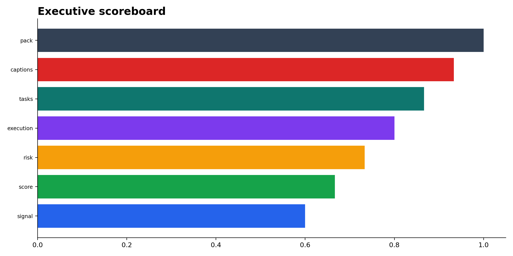
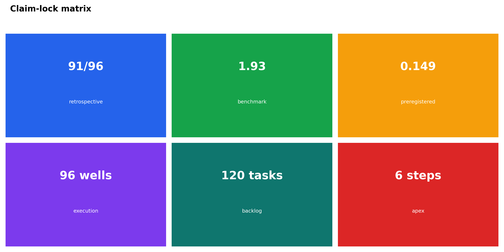
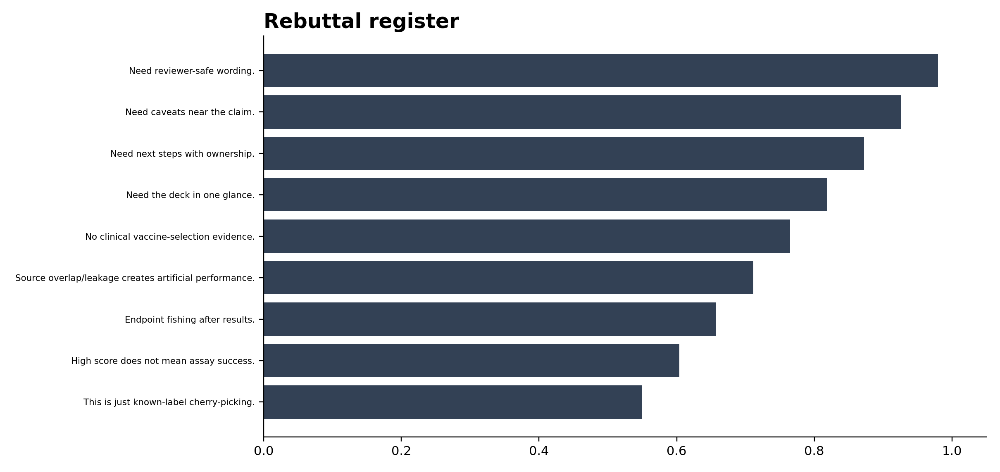
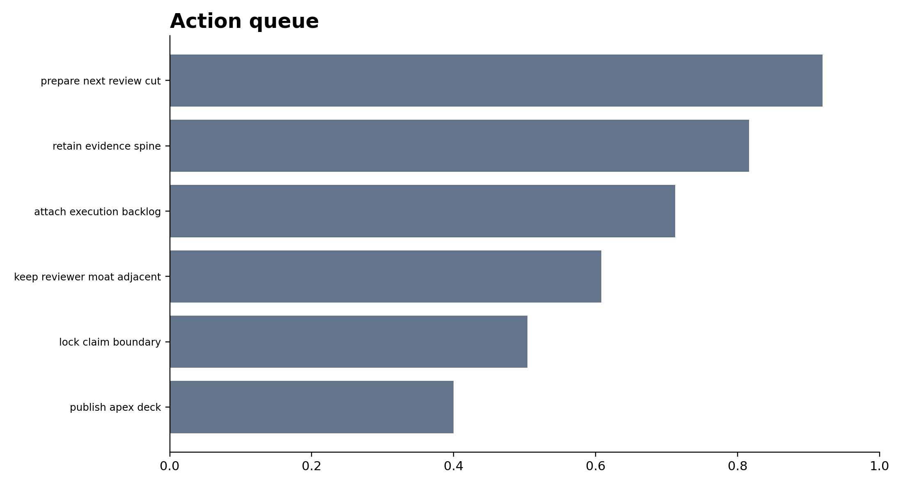
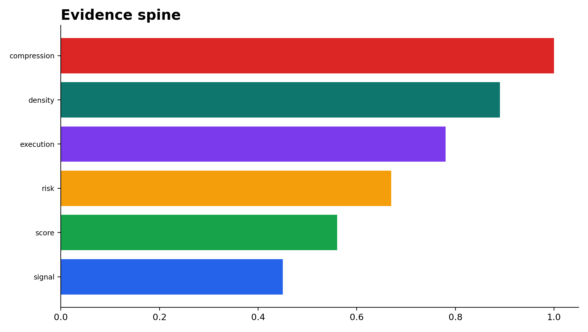
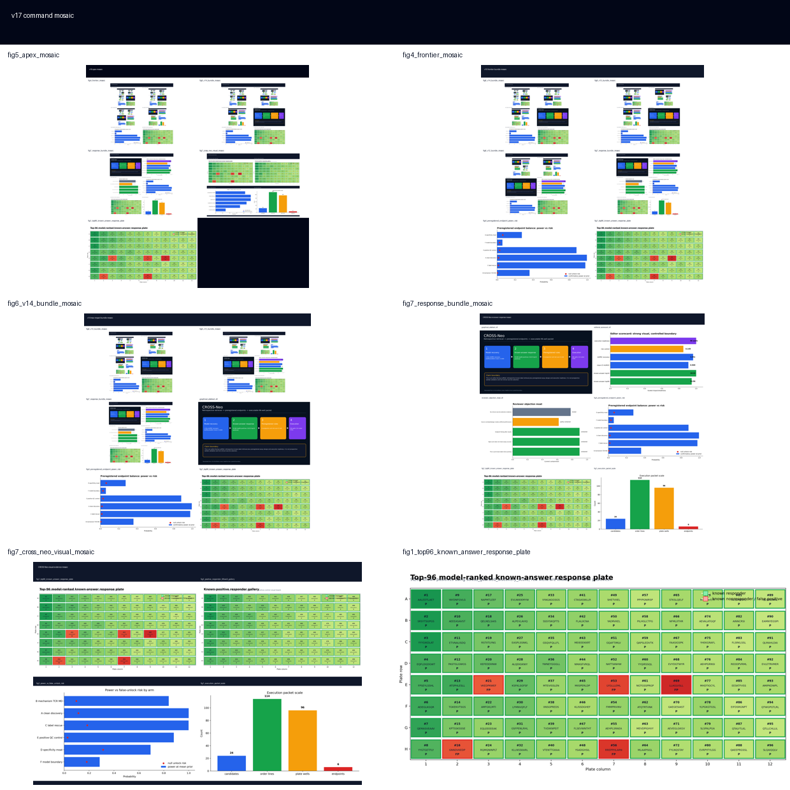

01Figures






02Scoreboard
| tile | value | meaning | use |
|---|---|---|---|
| signal | 91/96 | known-answer retrieval | retrospective prioritization |
| score | 1.93 | AUPRC recovery | benchmark improvement |
| risk | 0.149 | confirmatory null-risk | pre-assay guardrail |
| execution | 96 wells | execution packet | lab handoff |
| tasks | 120 | task density | scaffold management |
| captions | 8 | caption pack | editor surface |
| pack | v16 | apex deck | compressed executive layout |
03Claim locks
| lane | metric | allowed_use | boundary |
|---|---|---|---|
| retrospective | 91/96 | allowed for prioritization | not prospective |
| benchmark | 1.93 | allowed for model choice | clean-CV only |
| preregistered | 0.149 | allowed for endpoint lock | no post-hoc tuning |
| execution | 96 wells | allowed for lab handoff | not completed assay |
| backlog | 120 tasks | allowed for program steering | scaffold only |
| apex | 6 steps | allowed for review deck | compression only |
04Rebuttal register
| objection | defense | status | move |
|---|---|---|---|
| This is just known-label cherry-picking. | contained | tie to evidence or boundary | |
| High score does not mean assay success. | contained | tie to evidence or boundary | |
| Endpoint fishing after results. | contained | tie to evidence or boundary | |
| Source overlap/leakage creates artificial performance. | partly contained | tie to evidence or boundary | |
| No clinical vaccine-selection evidence. | locked | tie to evidence or boundary | |
| Need the deck in one glance. | scoreboard | contained | front-door summary |
| Need next steps with ownership. | action queue | contained | prioritized tasks |
| Need caveats near the claim. | claim lock matrix | contained | keep caveat and result adjacent |
| Need reviewer-safe wording. | boundary labels | contained | no overclaim |
05Action queue
| rank | action | status | notes |
|---|---|---|---|
| 1 | publish apex deck | done | surface the strongest reusable board |
| 2 | lock claim boundary | done | keep retrospective/prospective split explicit |
| 3 | keep reviewer moat adjacent | done | reduce claim drift |
| 4 | attach execution backlog | done | 120 tasks available |
| 5 | retain evidence spine | done | 6 layers |
| 6 | prepare next review cut | queued | flatten to one-slide summary if needed |
06Evidence spine
| layer | value | meaning |
|---|---|---|
| signal | 91/96 | known-answer surface |
| score | 1.93 | clean-CV improvement |
| risk | 0.149 | pre-assay gating |
| execution | 96 | handoff readiness |
| density | 120 | task pressure |
| compression | 6 | executive compression |
07Sources + paths
Output directory: /home/seungho/personal/THCA_data_analysis/project/results/cross_neo_kaggle_winner_playbook_2026_05_10/impact_command_v17_2026_05_11
HTML: /home/seungho/personal/THCA_data_analysis/project/papers_hub_2026_05_04/cross_neo_impact_command_v17.html
Live deploy status: ok